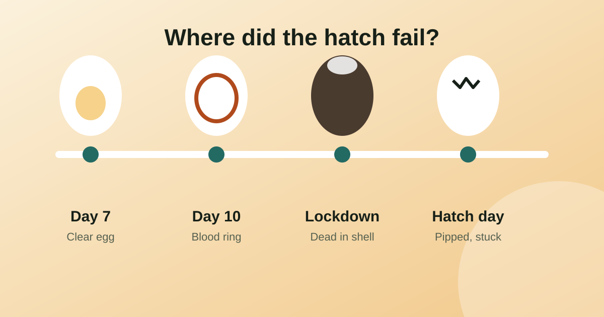

What size breaker for a cable? Match the breaker to the cable (IEC 60364)
The breaker protects the cable, not the other way round. Pick a breaker at or above the load but never above what the cable can carry.
Read article
Eggs fail to hatch for a few repeatable reasons, and the stage at which they fail tells you which one to check. Clear eggs at day 7 point to fertility or storage, early deaths point to temperature or handling, and fully formed chicks dead in the shell point to humidity, lockdown or an opened lid. This guide works through each stage so you know what to change for the next batch.
| What you see | When | Likely causes | What to try |
|---|---|---|---|
| Clear egg, no veins | Day 7-10 candling | Infertile, old eggs, long or warm storage, too few roosters | Set eggs within 7 days of laying, store at about 13-16 °C (55-60 °F), check flock ratio |
| Blood ring | Day 7-10 | Embryo died early: temperature swings, rough handling, bad turning | Check temperature with a second thermometer, handle eggs gently |
| Dark blob, no movement | Day 10-14 | Quitter: temperature, humidity or shell quality | Check logs for spikes, check shell cleanliness and nutrition of the hens |
| Fully formed, dead in shell, no pip | Lockdown | Humidity too high or low, temperature off, poor ventilation, late turning | Check air cell size and weight loss, stop turning at lockdown |
| Pipped but did not hatch | Hatch day | Lid opened, humidity dropped, membrane dried, chick too weak | Keep the lid closed, raise humidity during hatch |
If the egg is clear at the day 7 check, it either was never fertile or stopped almost at once. Look at the eggs before they go in. Eggs older than about 7-10 days lose hatchability quickly, and storing them somewhere hot or cold hurts too. Keep eggs pointed end down, turn them daily and keep them out of direct sun. See our candling guide for pictures of what to look for.
Temperature matters more than any other setting. A forced-air incubator should sit at about 37.5 °C (99.5 °F); a still-air one needs roughly 1 °C (2 °F) more, measured at the top of the eggs. A steady half degree too warm or cool shifts the hatch by about a day and lowers the hatch rate, and a spike when the sun hits the room or the power goes off can kill early embryos. Check with a second, calibrated thermometer at egg height, and let the incubator run for 24 hours before setting eggs. Our incubation chart lists the numbers for 11 species.
Eggs need to lose about 13% of their weight by lockdown. Too humid and the air cell is small, the chick is large and soft and may drown. Too dry and the air cell is large, the chick is small and the membranes stick to it. Candle on the usual days and compare the air cell to the expected size: roughly a quarter of the egg by day 14 and about a third at lockdown for chicken eggs. Adjust humidity gradually for the next batch. The incubator humidity guide has a weight-loss calculator.
You can only improve what you can compare, so write down for each batch: set date, temperature, humidity, when you turned and candled, and what failed. Hatch Day keeps it in one place: pick the species and the app gives a hatch countdown, daily temperature and humidity targets, and reminders for turning, candling and lockdown. With Pro you also get a candling log, a temperature and humidity log and hatch-rate statistics, so you can see what works. It is available for Android and iPhone and works offline with no account.
Setting a new batch? Work out your dates with the free hatch date calculator, or browse our egg incubation guides.
The most common reasons are an unsteady incubator temperature, wrong humidity, infertile or poorly stored eggs, and opening the incubator during the hatch. The stage at which the eggs failed shows which one to check first.
No veins and only a yolk shadow means the egg was infertile or stopped in the first day or two. Poor fertility, old eggs or a flock with too few roosters are the usual causes.
Usually humidity or temperature during the last days, or opening the lid during the hatch. Too dry and the membrane shrink-wraps the chick; too humid and the chick can drown or be too large to turn.
Backyard keepers often see 50 to 80 percent of all eggs set and a higher share of fertile eggs. Track every batch so you can see whether changes are working.
Published: . More in Egg incubation or all articles.